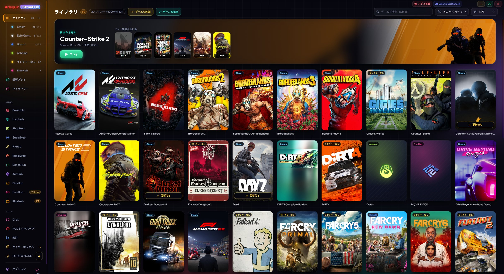

ArlequinGameHub
ランチャーをまとめるランチャー:すべてのゲームを1か所に、セーブデータをいつも安全に、プレイ中に必要なものすべてをそろえています。
Windows 10/11(64ビット) · 自動更新 · すべてのバージョン
このウェブサイトのバージョンは、新機能や改善がいち早く届きます。Microsoft Store版は反映が少し遅れることがあります。
Linux(AppImage、64ビット) · テスト版です。Nobaraでのみ動作確認しており、他のディストリビューションでは動かない場合があります。自動更新にもまだ対応していません

1つのプログラムで、遊ぶものすべて
ライブラリ全体
すべてのストアのゲームを、インストール済みかどうかに関わらずまとめて表示。カバー画像とプレイ時間も確認できます。
詳しく見る →SaveHub搭載
ゲームを閉じるたびに、セーブデータを自動でバックアップします。ワンクリックで復元したり、自分のクラウドにアップロードしたりできます。
詳しく見る →HUDとクロスヘア
FPS、温度、消費電力をゲーム画面の上に表示。クロスヘアは0.1ピクセル単位で調整できます。
詳しく見る →PCで動く?
各ゲームがPCで快適に動くかを確認し、本当のFPSを測定して、グラフィック設定も変更できます。
詳しく見る →Play Hub
Xbox、PlayStation、Switchのコントローラーで、ソファから遊べる全画面モードです。
詳しく見る →内蔵チャット
Discord、Steamチャット、TeamSpeakをゲームのそばに。ウィンドウをいくつも開く必要はありません。
詳しく見る →BenchHub：あなたのPCの本当の速さ
プロセッサ、RAM、グラフィックスのテストと、コミュニティと比べられるHall of Fame。
詳しく見る →AimHub：エイムのウォームアップ
プレイ前のウォームアップやクロスヘアのテストができる3Dルーム。自分の感度のまま使えます。
詳しく見る →ReplayHub:今プレイした場面を保存
キーを押すと、直前のプレイがShadowPlayのように動画として保存されます。
詳しく見る →LootHub:もらえる無料ゲーム
ストアが期間限定で配布しているゲームをまとめて表示し、新しいものが出たらお知らせします。
詳しく見る →DiskHub
各ゲームがドライブでどれだけ容量を使っているか、そして何が余っているか。
詳しく見る →ShopHub:ストアとPCを並べて確認
Steam、GOG、Epic、Microsoft Storeを1か所にまとめ、PCの状態も一緒に確認できます。
詳しく見る →SocialHub:アカウント不要でチャンネルを視聴
Twitch、YouTube、KickのチャンネルをGameHub内で表示。アカウントは不要です。
詳しく見る →FixHub:プレイヤーの問題と解決方法
直接ダウンロード版のみ ゲームごとの既知の問題と解決方法を、プレイヤーが書いています。
詳しく見る →EmuHub:コンソールのゲーム
直接ダウンロード版のみ コンソールのゲームをライブラリに表示。エミュレーター、SaveHubのセーブデータ、コミュニティの意見もまとめて確認できます。
詳しく見る →TVHub：PC の画面をテレビに
PC から家のテレビで見たり遊んだり。ケーブルもインターネットも不要です。
詳しく見る →RemoteHub：スマホをリモコンに
家庭内ネットワークで、スマホから GameHub と PC を操作できます。
詳しく見る →コミュニティと一緒に作る
セーブデータとFPSの独自データベースと、プレイしている人たちからのハードウェア統計。
詳しく見る →POTATO MODE
ブラウザーを内蔵しない超軽量のネイティブ版。リソースが少ないPC向けです。
詳しく見る →ゲームを自動で見つけます
GameHubはストアのパスワードを一切求めません。PCにすでにある情報を読み取り、各ゲームをそれぞれのランチャーで起動します。
普通のランチャーにはないもの
ゲームをまとめてくれる優れたランチャーはたくさんあります。GameHubはさらに一歩先へ。すべてを1か所にまとめるだけでなく、 セーブデータを守り、各ゲームがPCでどう動くかも教えてくれます。
| ストアのランチャー | ストアをまとめるランチャー | Arlequin GameHub | |
|---|---|---|---|
| すべてのストアのゲームをまとめて表示 | 自社のストアのみ | あり | あり |
| ゲームを閉じるたびにセーブデータをバックアップ | 自社クラウドのみ | プラグインで対応 | あり(標準搭載) |
| 自分のクラウド(Drive、OneDrive、Dropbox)にセーブデータを保存 | なし | 通常はなし | あり |
| 各ゲームの動作要件で「PCで動く?」を確認 | ストア内 | 通常はなし | あり(ライブラリ内) |
| FPSを測定し、何が制限しているか(GPUかCPUか)を確認 | なし | なし | あり |
| ゲーム画面の上にHUDとクロスヘアを表示 | なし | 通常はなし | あり |
| キー1つで、今プレイした場面を動画として保存 | なし | 通常はなし | あり |
| ストアが配布しているゲームを、新着の通知付きで表示 | なし | 通常はなし | あり |
| 他のストアと価格を比較し、購入前にPCで動くかを確認 | なし | 通常はなし | あり |
| アカウント不要で、Twitch、YouTube、Kickのチャンネルのライブ配信と動画を視聴 | なし | なし | あり |
| 各ゲームがドライブで使っている容量と、アンインストール済みゲームの残りファイルを確認 | 自社のゲームのみ | 通常はなし | あり |
| PCのベンチマーク測定と、コミュニティのHall of Fame | なし | なし | あり |
| 自分の感度で、プレイ前にエイムをウォームアップ | なし | なし | あり |
| コントローラーで遊ぶソファモード | 一部 | 一部 | あり(Play Hub) |
| ゲームの外から、各ゲームのグラフィック設定を変更 | なし | なし | 多くのゲームで可能 |
| Discord、Steamチャット、TeamSpeakを内蔵 | 独自のチャット | 通常はなし | あり |
| 低スペックPC向けの超軽量モード | なし | 通常はなし | POTATO MODE |
| ストアのパスワードを要求 | — | 場合による | なし |
良いところと、まだ足りないところ
- ✓無料で広告なし。 大事な機能が有料になることはありません。
- ✓意識しなくてもセーブデータは安全。 ゲームを閉じるたびにバックアップし、セーブデータが壊れた場合の保護もあります。
- ✓軽量。 PCのリソースが少なくても、POTATO MODEならブラウザーを内蔵しないネイティブウィンドウで動きます。
- ✓データはあなたが決める。 共有されるものはすべて匿名で、項目ごとにオフにできます。
- ✓自動で更新されます バージョンを重ねるごとに、プレイヤーの皆さんの協力で良くなっていきます。
- !まだ若いプログラムです。 不具合を見つけたら、ぜひ教えてください。
- !まだ署名されていません。 初回はWindowsが警告を表示します:「詳細情報 → 実行」。
- !Linuxはテスト中です。 Nobaraでのみ動作確認したプレビュー版があり、自動更新にはまだ対応していません。Steam Deckでのテストはまだです。
- !データベースはまだ始まったばかりです。 あまり知られていないゲームでは、初回にセーブフォルダーを手動で指定する必要があるかもしれません(またはプレイ中にGameHubが覚えます)。
- !FPSの推定にはプレイヤーのデータが必要です。 データが少ないゲームでは、Steamのシステム要件からFPSを算出するため、おおよその値になります。
試してみませんか？
⬇ 直接ダウンロード 🛍️ Microsoft StoreからダウンロードWindows 10・11（64ビット）· 無料 · 自動で更新
Linux(AppImage、64ビット) · テスト版です。Nobaraでのみ動作確認しており、他のディストリビューションでは動かない場合があります。自動更新にもまだ対応していません